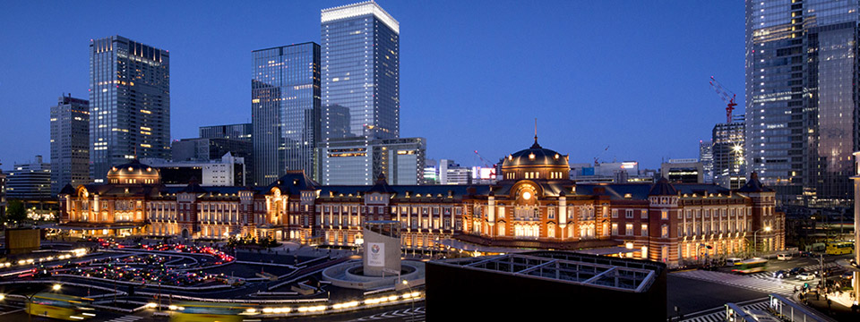

東京車站路線介紹

東京車站位於東京的中心。
這個巨大的車站也是前往日本各地的新幹線起點，在日本是乘客最多的鐵路車站之一。
然而，東京車站不只是一般的交通設施，也是擁有悠久歷史和眾多故事的文化資產。
其中，東京車站的原型──丸之內站房於2012年10月，復原成100年前的古典外觀，廣受歡迎。
東京車站裡面有許多商業設施，像是靠近丸之內南口的「ecute東京」
在中央通路兩側延伸的「Central Street」、位於地下一樓的「GRANSTA」等
東京車站的「Ekinaka（車站內商業設施的日語）」規模在日本也是數一數二的。
只不過整個東京車站實在太大，許多旅客來到這裡都容易迷路
但是不用擔心，有新增設了旅行服務中心。
外國觀光客能夠在這裡獲得旅行資訊、寄放隨身行李、使用宅配服務、兌換外幣，以及兌換JR通票。
此外，這裡還設置了能夠上網的電腦，作為在日本旅行的起點，多加利用。
參考資料
http://japan-magazine.jnto.go.jp/tw/1212_tokyost.html